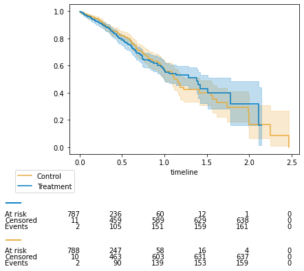
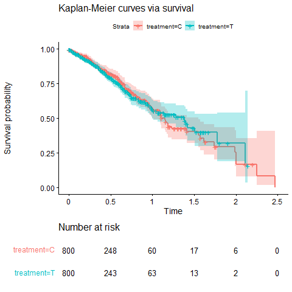

Notes on survival curves¶
In this section a comparison of R versus Python survival curves display is documented.
Event tables and survival curves¶
The lifelines package is used to compute survival curves such as the one pictured below for a time-to-event outcome.

Differences between R and Python¶
Events tables and survival curves are identical in R and Python. However, the numbers at risk displayed at certain times may differ for two reasons:
- The numbers at risk displayed can be calculated at the start of the period defined by the x-axis tick, or at the end. An option exists in lifelines (see here) to display numbers at risk at the start (left) or end of period (right).


Comparison with R packages¶
The survival and prodlim packages display numbers at risk at the start of period, while the KMunicate package display number at risk at the end of period.


The lifelines option will thus be set to "start of the period" by default, to align with survival and prodlim outputs.
- The numbers at risk displayed at a time tick not found in the survival tables are handled differently in R and Python. As shown in the survival figures and table belows for Time = 1.5, Python displays the numbers "right before" the missing tick (number at risk = 19 for control), while R displays the numbers "right after" (number at risk = 17 for control).



The gpc_library core code was modified to account for this difference, and to align with survival and prodlim outputs, as shown below.